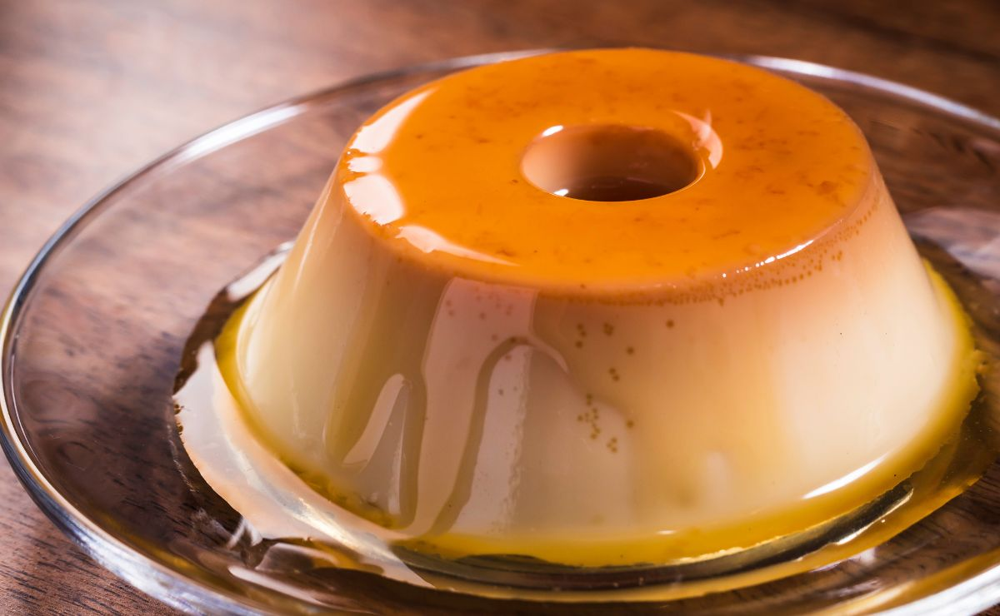

1 xícara (chá) de açúcar
Meia xícara (chá) de água quente
1 Leite MOÇA® (lata ou caixinha) 395 g
2 medidas (da lata) de Leite Líquido NINHO® Forti+ Integral (790 ml)
3 ovos
1. Em uma panela de fundo largo, derreta o açúcar até ficar dourado.
2. Junte a água quente e mexa com uma colher.
3. Deixe ferver até dissolver os torrões de açúcar e a calda engrossar.
4. Forre com a calda uma forma com furo central (19 cm de diâmetro) e reserve.
5. Em um liquidificador, bata todos os ingredientes do pudim e despeje na forma reservada.
6. Cubra com papel-alumínio e leve ao forno médio (180°C), em banho-maria, por cerca de 1 hora e 30 minutos.
7. Depois de frio, leve para gelar por cerca de 6 horas.
8. Desenforme e sirva a seguir.
Se você tiver seguido a receita certinho, você terá um Pudim muito gostoso.
Assim!! 👇
